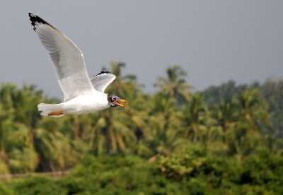
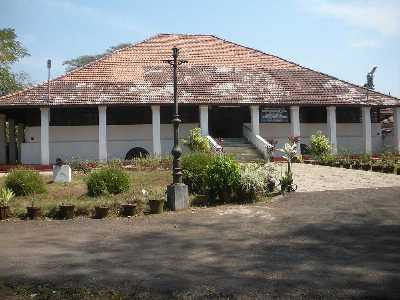

KOZHIKODE
Kozhikode is a coastal city in the south Indian state of Kerala. It was a significant spice trade center and is close to Kappad Beach, where Portuguese explorer Vasco da Gama landed in 1498. The central Kozhikode Beach, overlooked by an old lighthouse, is a popular spot for watching the sunset. Inland, tree-lined Mananchira Square, with its musical fountain, surrounds the massive Mananchira Tank, an artificial pond

Kadalundi bird sanctuary

Spread over a cluster of islands, surrounded by beautiful hillocks lies a bird watchers' planet, the Kadalundi Bird Sanctuary. Located in Kozhikode, the sanctuary greets its visitors with freshwaters of Kadalundi River. This virgin land is home to 60 migratory and more than hundred native birds. Wildlife enthusiasts and bird lovers visit the place to capture even the minutest movements of the birds in their cameras. The sanctuary finds itself 200 m above the sea level.
The paradise designed for bird lovers also offers you a place in serenity. Away from the city's hustle, you can sit here and relax while you witness the lively playful birds. Moreover, the river flowing inside forms a union with the Arabian Sea at a point called Kadalundi Nagaram. This river houses a variety of fishes, crabs, and mussels. You must visit the Kadalundi Bird Sanctuary in December-April when the forest seems no less than a green blanket. It is the time when you can see most of the birds.
Readmore
Pazhassiraja Museum

Pazhassiraja Museum located on East Hill has been named after the great Pazhassiraja Kerala Varma of the Padinjare Kovilakom of the Kottayam Royal Family. The museum is famous for its various archaeological remains such as antique bronzes, ancient paintings and the historical umbrella stones etc.
Readmore
Thikkoti Light House

Said to be built on the remains of a shipwreck, the Thikkoti Lighthouse is one of the major attractions of Kozhikode. Located on a rocky shoreline, the place is best known for the scenic views it offers as well as several species of nomadic birds.
Readmore